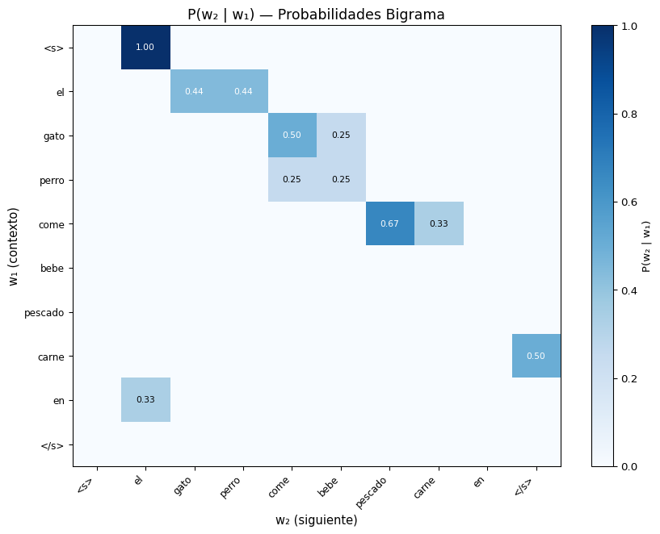
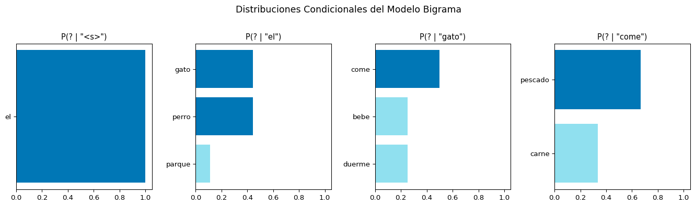

Code
graph LR
A["P(el)"] --> B["P(gato|el)"]
B --> C["P(come|el,gato)"]
style A fill:#cfe2ff,color:#000
style B fill:#90e0ef,color:#000
style C fill:#0077b6,color:#fff
S1: Modelos de Lenguaje N-gram y Regla de la Cadena
Universidad Católica Boliviana
2026-02-23
Primera Parte
Segunda Parte
Un modelo de lenguaje (LM) asigna una probabilidad a cualquier secuencia de palabras.
| Secuencia | \(P(\text{secuencia})\) |
|---|---|
| “el gato come pescado” | Alta ✅ |
| “come gato el pescado” | Baja ❌ |
| “el gato baila impuesto” | Muy baja ❌ |
Dada una secuencia de palabras \(w_1, w_2, \dots, w_n\):
\[P(w_1, w_2, \dots, w_n) = \text{?}\]
El modelo de lenguaje estima esta probabilidad conjunta.
Idea Central
Un modelo de lenguaje responde: ¿Qué tan probable es esta secuencia de palabras? y ¿Cuál es la siguiente palabra más probable?
Queremos estimar:
\[P(w_1, w_2, \dots, w_n)\]
Ejemplo: \(P(\text{el, gato, come, pescado, fresco})\)
¿Por qué es difícil?
La regla de la cadena de probabilidad nos permite descomponer la probabilidad conjunta:
\[P(w_1, w_2, \dots, w_n) = \prod_{k=1}^{n} P(w_k \mid w_1, \dots, w_{k-1})\]
Ejemplo:
\[P(\text{el, gato, come}) = P(\text{el}) \times P(\text{gato} \mid \text{el}) \times P(\text{come} \mid \text{el, gato})\]
graph LR
A["P(el)"] --> B["P(gato|el)"]
B --> C["P(come|el,gato)"]
style A fill:#cfe2ff,color:#000
style B fill:#90e0ef,color:#000
style C fill:#0077b6,color:#fff
Cada palabra depende de todo el historial previo.
Esto es exacto, pero impracticable para historiales largos.
from collections import Counter
corpus = [
"el gato come pescado",
"el gato come carne",
"el gato bebe leche",
"el perro come carne",
"el perro bebe agua",
"el gato come pescado fresco",
]
# Tokenizar
docs = [sent.split() for sent in corpus]
todas = [w for doc in docs for w in doc]
N = len(todas)
# P(el)
p_el = Counter(todas)["el"] / N
print(f"P(el) = {Counter(todas)['el']}/{N} = {p_el:.3f}")
# P(gato | el) — ¿cuántas veces "gato" sigue a "el"?
bigramas = [(docs[i][j], docs[i][j+1]) for i in range(len(docs)) for j in range(len(docs[i])-1)]
bigrama_count = Counter(bigramas)
p_gato_dado_el = bigrama_count[("el", "gato")] / Counter(todas)["el"]
print(f"P(gato|el) = {bigrama_count[('el', 'gato')]}/{Counter(todas)['el']} = {p_gato_dado_el:.3f}")
# P(come | el, gato)
trigramas = [(docs[i][j], docs[i][j+1], docs[i][j+2])
for i in range(len(docs)) for j in range(len(docs[i])-2)]
trigrama_count = Counter(trigramas)
p_come_dado_el_gato = trigrama_count[("el", "gato", "come")] / bigrama_count[("el", "gato")]
print(f"P(come|el,gato) = {trigrama_count[('el', 'gato', 'come')]}/{bigrama_count[('el', 'gato')]} = {p_come_dado_el_gato:.3f}")
# P(el, gato, come)
p_conjunta = p_el * p_gato_dado_el * p_come_dado_el_gato
print(f"\nP(el, gato, come) = {p_el:.3f} × {p_gato_dado_el:.3f} × {p_come_dado_el_gato:.3f} = {p_conjunta:.3f}")P(el) = 6/25 = 0.240
P(gato|el) = 4/6 = 0.667
P(come|el,gato) = 3/4 = 0.750
P(el, gato, come) = 0.240 × 0.667 × 0.750 = 0.120\[P(w_5 \mid w_1, w_2, w_3, w_4)\]
Para estimar esto necesitamos contar cuántas veces aparece la secuencia completa \(w_1 w_2 w_3 w_4 w_5\) en el corpus.
Problema: la mayoría de secuencias largas nunca aparecen en el corpus → probabilidad = 0.
\[P(\text{fresco} \mid \text{el, gato, come, pescado})\]
¿Cuántas veces aparece “el gato come pescado fresco” en un corpus?
Probablemente muy pocas o ninguna.
Solución: Supuesto de Markov
En lugar de condicionar en todo el historial, condicionamos solo en las últimas \(N-1\) palabras.
La probabilidad de una palabra depende solo de las \(N-1\) palabras anteriores, no de todo el historial.
\[P(w_k \mid w_1, \dots, w_{k-1}) \approx P(w_k \mid w_{k-N+1}, \dots, w_{k-1})\]
\[P(w_k)\]
No depende de nada.
Cada palabra es independiente.
\[P(w_k \mid w_{k-1})\]
Depende solo de la palabra anterior.
\[P(w_k \mid w_{k-2}, w_{k-1})\]
Depende de las 2 palabras anteriores.
| Modelo | Probabilidad conjunta |
|---|---|
| Unigrama | \(P(w_1 \dots w_n) = \prod_{k=1}^n P(w_k)\) |
| Bigrama | \(P(w_1 \dots w_n) = \prod_{k=1}^n P(w_k \mid w_{k-1})\) |
| Trigrama | \(P(w_1 \dots w_n) = \prod_{k=1}^n P(w_k \mid w_{k-2}, w_{k-1})\) |
Estimación por Máxima Verosimilitud (MLE):
\[P_{\text{MLE}}(w_k \mid w_{k-1}) = \frac{C(w_{k-1}, w_k)}{C(w_{k-1})}\]
Donde \(C(\cdot)\) es el conteo en el corpus de entrenamiento.
flowchart LR
A["<s>"] -->|"P(el|<s>)"| B["el"]
B -->|"P(gato|el)"| C["gato"]
C -->|"P(come|gato)"| D["come"]
D -->|"P(pescado|come)"| E["pescado"]
E -->|"P(</s>|pescado)"| F["</s>"]
style A fill:#ffd166,color:#000
style B fill:#cfe2ff,color:#000
style C fill:#90e0ef,color:#000
style D fill:#48cae4,color:#000
style E fill:#0077b6,color:#fff
style F fill:#ffd166,color:#000flowchart LR
A["<s>"] -->|"P(el|<s>)"| B["el"]
B -->|"P(gato|el)"| C["gato"]
C -->|"P(come|gato)"| D["come"]
D -->|"P(pescado|come)"| E["pescado"]
E -->|"P(</s>|pescado)"| F["</s>"]
style A fill:#ffd166,color:#000
style B fill:#cfe2ff,color:#000
style C fill:#90e0ef,color:#000
style D fill:#48cae4,color:#000
style E fill:#0077b6,color:#fff
style F fill:#ffd166,color:#000
\[P(\text{el gato come pescado}) = P(\text{el} \mid \text{<s>}) \times P(\text{gato} \mid \text{el}) \times P(\text{come} \mid \text{gato}) \times P(\text{pescado} \mid \text{come}) \times P(\text{</s>} \mid \text{pescado})\]
Tokens especiales
<s> = inicio de oración (start)</s> = fin de oración (end)Se agregan para modelar qué palabras tienden a iniciar/terminar oraciones.
from collections import Counter
import numpy as np
corpus = [
"el gato come pescado fresco",
"el perro come carne roja",
"el gato bebe leche fresca",
"el perro bebe agua fresca",
"el gato come pescado y carne",
"el perro juega en el parque",
"el gato duerme en la alfombra",
"el perro duerme en la cama",
]
# Agregar tokens de inicio y fin
def preparar_corpus(corpus):
return [["<s>"] + sent.split() + ["</s>"] for sent in corpus]
docs = preparar_corpus(corpus)
todas = [w for doc in docs for w in doc]
vocab = sorted(set(todas))
N_total = len(todas)
freq = Counter(todas)
print(f"Vocabulario: {len(vocab)} palabras")
print(f"Total tokens: {N_total}\n")
# Probabilidades unigrama
print(f"{'Palabra':<12} {'Conteo':>7} {'P(w)':>8}")
print("-" * 30)
for w in sorted(freq, key=freq.get, reverse=True)[:10]:
p = freq[w] / N_total
print(f"{w:<12} {freq[w]:>7} {p:>8.3f}")Vocabulario: 22 palabras
Total tokens: 60
Palabra Conteo P(w)
------------------------------
el 9 0.150
<s> 8 0.133
</s> 8 0.133
gato 4 0.067
perro 4 0.067
come 3 0.050
en 3 0.050
pescado 2 0.033
carne 2 0.033
bebe 2 0.033from collections import Counter, defaultdict
# Construir conteos de bigramas
bigrama_counts = Counter()
unigrama_counts = Counter()
for doc in docs:
for i in range(len(doc) - 1):
bigrama_counts[(doc[i], doc[i+1])] += 1
for w in doc:
unigrama_counts[w] += 1
# Probabilidad bigrama: P(w2 | w1) = C(w1, w2) / C(w1)
def p_bigrama(w2, w1):
if unigrama_counts[w1] == 0:
return 0
return bigrama_counts[(w1, w2)] / unigrama_counts[w1]
# Mostrar probabilidades condicionales para "el"
print("P(? | el):")
siguientes = [(w2, p_bigrama(w2, "el")) for (w1, w2) in bigrama_counts if w1 == "el"]
siguientes.sort(key=lambda x: -x[1])
for w, p in siguientes:
barra = "█" * int(p * 40)
print(f" P({w:<10} | el) = {p:.3f} {barra}")
# Mostrar para "come"
print("\nP(? | come):")
siguientes = [(w2, p_bigrama(w2, "come")) for (w1, w2) in bigrama_counts if w1 == "come"]
siguientes.sort(key=lambda x: -x[1])
for w, p in siguientes:
barra = "█" * int(p * 40)
print(f" P({w:<10} | come) = {p:.3f} {barra}")P(? | el):
P(gato | el) = 0.444 █████████████████
P(perro | el) = 0.444 █████████████████
P(parque | el) = 0.111 ████
P(? | come):
P(pescado | come) = 0.667 ██████████████████████████
P(carne | come) = 0.333 █████████████import matplotlib.pyplot as plt
import numpy as np
# Seleccionar palabras interesantes
palabras_sel = ["<s>", "el", "gato", "perro", "come", "bebe", "pescado", "carne", "en", "</s>"]
n = len(palabras_sel)
prob_matrix = np.zeros((n, n))
for i, w1 in enumerate(palabras_sel):
for j, w2 in enumerate(palabras_sel):
prob_matrix[i][j] = p_bigrama(w2, w1)
fig, ax = plt.subplots(figsize=(9, 7))
im = ax.imshow(prob_matrix, cmap='Blues', aspect='auto', vmin=0)
ax.set_xticks(range(n))
ax.set_xticklabels(palabras_sel, rotation=45, ha='right', fontsize=9)
ax.set_yticks(range(n))
ax.set_yticklabels(palabras_sel, fontsize=9)
ax.set_xlabel('w₂ (siguiente)', fontsize=11)
ax.set_ylabel('w₁ (contexto)', fontsize=11)
ax.set_title('P(w₂ | w₁) — Probabilidades Bigrama', fontsize=13)
for i in range(n):
for j in range(n):
val = prob_matrix[i][j]
if val > 0:
color = 'white' if val > 0.4 else 'black'
ax.text(j, i, f'{val:.2f}', ha='center', va='center', fontsize=8, color=color)
plt.colorbar(im, label='P(w₂ | w₁)')
plt.tight_layout()
plt.show()
import numpy as np
def prob_oracion_bigrama(oracion):
"""Calcular P(oración) con modelo bigrama."""
tokens = ["<s>"] + oracion.split() + ["</s>"]
log_prob = 0
detalles = []
for i in range(1, len(tokens)):
p = p_bigrama(tokens[i], tokens[i-1])
if p == 0:
return 0, [(tokens[i-1], tokens[i], 0, float('-inf'))]
lp = np.log2(p)
log_prob += lp
detalles.append((tokens[i-1], tokens[i], p, lp))
return 2**log_prob, detalles
oraciones = [
"el gato come pescado",
"el perro come carne",
"el gato come carne",
"el pescado come gato",
]
for oracion in oraciones:
prob, detalles = prob_oracion_bigrama(oracion)
print(f"'{oracion}'")
for w1, w2, p, lp in detalles:
print(f" P({w2}|{w1}) = {p:.3f} [log₂ = {lp:.3f}]")
print(f" → P(oración) = {prob:.6f}\n")'el gato come pescado'
P(</s>|pescado) = 0.000 [log₂ = -inf]
→ P(oración) = 0.000000
'el perro come carne'
P(el|<s>) = 1.000 [log₂ = 0.000]
P(perro|el) = 0.444 [log₂ = -1.170]
P(come|perro) = 0.250 [log₂ = -2.000]
P(carne|come) = 0.333 [log₂ = -1.585]
P(</s>|carne) = 0.500 [log₂ = -1.000]
→ P(oración) = 0.018519
'el gato come carne'
P(el|<s>) = 1.000 [log₂ = 0.000]
P(gato|el) = 0.444 [log₂ = -1.170]
P(come|gato) = 0.500 [log₂ = -1.000]
P(carne|come) = 0.333 [log₂ = -1.585]
P(</s>|carne) = 0.500 [log₂ = -1.000]
→ P(oración) = 0.037037
'el pescado come gato'
P(pescado|el) = 0.000 [log₂ = -inf]
→ P(oración) = 0.000000
from collections import Counter
# Preparar con doble inicio para trigramas
docs_tri = [["<s>", "<s>"] + sent.split() + ["</s>"] for sent in corpus]
# Conteos
trigrama_counts = Counter()
bigrama_counts_tri = Counter()
for doc in docs_tri:
for i in range(len(doc) - 2):
trigrama_counts[(doc[i], doc[i+1], doc[i+2])] += 1
for i in range(len(doc) - 1):
bigrama_counts_tri[(doc[i], doc[i+1])] += 1
def p_trigrama(w3, w1, w2):
"""P(w3 | w1, w2)"""
denom = bigrama_counts_tri[(w1, w2)]
if denom == 0:
return 0
return trigrama_counts[(w1, w2, w3)] / denom
# Comparar: ¿qué sigue después de "el gato"?
print("P(? | el, gato):")
siguientes = [(w3, p_trigrama(w3, "el", "gato"))
for (w1, w2, w3) in trigrama_counts if w1 == "el" and w2 == "gato"]
siguientes.sort(key=lambda x: -x[1])
for w, p in siguientes:
barra = "█" * int(p * 40)
print(f" P({w:<10} | el, gato) = {p:.3f} {barra}")
print("\nP(? | el, perro):")
siguientes = [(w3, p_trigrama(w3, "el", "perro"))
for (w1, w2, w3) in trigrama_counts if w1 == "el" and w2 == "perro"]
siguientes.sort(key=lambda x: -x[1])
for w, p in siguientes:
barra = "█" * int(p * 40)
print(f" P({w:<10} | el, perro) = {p:.3f} {barra}")P(? | el, gato):
P(come | el, gato) = 0.500 ████████████████████
P(bebe | el, gato) = 0.250 ██████████
P(duerme | el, gato) = 0.250 ██████████
P(? | el, perro):
P(come | el, perro) = 0.250 ██████████
P(bebe | el, perro) = 0.250 ██████████
P(juega | el, perro) = 0.250 ██████████
P(duerme | el, perro) = 0.250 ██████████import numpy as np
def prob_unigrama(oracion):
tokens = oracion.split()
prob = 1.0
for w in tokens:
p = freq.get(w, 0) / N_total
if p == 0:
return 0
prob *= p
return prob
def prob_bigrama_simple(oracion):
p, _ = prob_oracion_bigrama(oracion)
return p
oraciones_test = [
"el gato come pescado", # Gramatical y vista
"el perro bebe agua", # Gramatical y vista
"el gato come carne", # Gramatical, parcialmente vista
"come el pescado gato", # Agramatical
]
print(f"{'Oración':<30} {'Unigrama':>12} {'Bigrama':>12}")
print("-" * 56)
for oracion in oraciones_test:
p_uni = prob_unigrama(oracion)
p_bi = prob_bigrama_simple(oracion)
print(f"{oracion:<30} {p_uni:>12.6f} {p_bi:>12.6f}")Oración Unigrama Bigrama
--------------------------------------------------------
el gato come pescado 0.000017 0.000000
el perro bebe agua 0.000006 0.000000
el gato come carne 0.000017 0.037037
come el pescado gato 0.000017 0.000000Observación
El modelo bigrama asigna probabilidad 0 a “come el pescado gato” porque \(P(\text{el} \mid \text{come}) = 0\) en nuestro corpus. El unigrama no puede detectar este desorden.
Podemos generar texto muestreando la siguiente palabra según las probabilidades del modelo:
import numpy as np
def generar_bigrama(max_palabras=15, seed=42):
"""Generar texto con modelo bigrama."""
rng = np.random.RandomState(seed)
palabra_actual = "<s>"
oracion = []
for _ in range(max_palabras):
# Obtener distribución de la siguiente palabra
candidatos = [(w2, p_bigrama(w2, palabra_actual))
for (w1, w2) in bigrama_counts if w1 == palabra_actual]
if not candidatos:
break
palabras, probs = zip(*candidatos)
probs = np.array(probs)
probs = probs / probs.sum() # Normalizar
# Muestrear
idx = rng.choice(len(palabras), p=probs)
siguiente = palabras[idx]
if siguiente == "</s>":
break
oracion.append(siguiente)
palabra_actual = siguiente
return " ".join(oracion)
print("Oraciones generadas con modelo bigrama:\n")
for i in range(8):
texto = generar_bigrama(seed=i*7+1)
print(f" {i+1}. {texto}")Oraciones generadas con modelo bigrama:
1. el perro come pescado fresco
2. el parque
3. el gato come pescado fresco
4. el perro bebe agua fresca
5. el gato come carne roja
6. el perro duerme en la alfombra
7. el perro come pescado fresco
8. el gato come pescado fresco“pescado el fresco come gato” 😵
“el gato come pescado fresco” → memorización
El Dilema de los N-gramas
import matplotlib.pyplot as plt
import numpy as np
contextos = ["<s>", "el", "gato", "come"]
fig, axes = plt.subplots(1, 4, figsize=(14, 4))
for ax, ctx in zip(axes, contextos):
candidatos = [(w2, p_bigrama(w2, ctx))
for (w1, w2) in bigrama_counts if w1 == ctx and p_bigrama(w2, ctx) > 0]
if candidatos:
candidatos.sort(key=lambda x: -x[1])
palabras, probs = zip(*candidatos)
colores = ['#0077b6' if p == max(probs) else '#90e0ef' for p in probs]
ax.barh(list(palabras)[::-1], list(probs)[::-1], color=colores[::-1])
ax.set_title(f'P(? | "{ctx}")', fontsize=11)
ax.set_xlim(0, 1.05)
plt.suptitle('Distribuciones Condicionales del Modelo Bigrama', fontsize=13, y=1.02)
plt.tight_layout()
plt.show()
Si un N-grama nunca apareció en el corpus de entrenamiento:
\[C(\text{gato, cocina}) = 0 \implies P(\text{cocina} \mid \text{gato}) = 0\]
Y si cualquier término de la cadena es 0, toda la oración tiene probabilidad 0:
\[P(\text{oración}) = \dots \times 0 \times \dots = 0\]
oracion = "el gato cocina pescado"
prob, detalles = prob_oracion_bigrama(oracion)
print(f"'{oracion}'")
for w1, w2, p, lp in detalles:
marca = " ← ¡CERO!" if p == 0 else ""
print(f" P({w2}|{w1}) = {p:.3f}{marca}")
print(f"\nP(oración) = {prob}")'el gato cocina pescado'
P(cocina|gato) = 0.000 ← ¡CERO!
P(oración) = 0Consecuencia
Una sola coocurrencia no vista destruye toda la probabilidad. ¿La solución? Suavizado (próxima sesión).
Multiplicar muchas probabilidades pequeñas lleva a números extremadamente pequeños:
import numpy as np
# Simular: multiplicar muchas probabilidades pequeñas
probs = [0.3, 0.1, 0.05, 0.2, 0.1, 0.15, 0.08, 0.12, 0.06, 0.1]
producto = 1.0
for i, p in enumerate(probs, 1):
producto *= p
print(f" Después de {i:2d} multiplicaciones: {producto:.2e}")
print(f"\n¡Con 20 palabras esto llega a ~{producto**2:.2e}!") Después de 1 multiplicaciones: 3.00e-01
Después de 2 multiplicaciones: 3.00e-02
Después de 3 multiplicaciones: 1.50e-03
Después de 4 multiplicaciones: 3.00e-04
Después de 5 multiplicaciones: 3.00e-05
Después de 6 multiplicaciones: 4.50e-06
Después de 7 multiplicaciones: 3.60e-07
Después de 8 multiplicaciones: 4.32e-08
Después de 9 multiplicaciones: 2.59e-09
Después de 10 multiplicaciones: 2.59e-10
¡Con 20 palabras esto llega a ~6.72e-20!Solución: Trabajar en espacio logarítmico:
\[\log P(w_1 \dots w_n) = \sum_{k=1}^n \log P(w_k \mid w_{k-1})\]
Las multiplicaciones se convierten en sumas de logaritmos.
Un modelo bigrama solo ve una palabra de contexto:
“El profesor que enseña la clase de procesamiento de lenguaje natural en la universidad católica boliviana **___**”
El bigrama solo ve “boliviana” para predecir lo siguiente. ¡Perdió todo el contexto relevante!
Adelanto
Las RNNs (Semana 6) y los Transformers (Semana 9) resuelven este problema usando mecanismos de memoria y atención.
| Problema | Descripción | Solución |
|---|---|---|
| Probabilidad cero | N-gramas no vistos → \(P = 0\) | Suavizado (S2) |
| Underflow | Producto de probs → ≈ 0 | Log-probabilidades |
| Contexto limitado | Solo \(N-1\) palabras de historia | RNNs, Transformers |
| Almacenamiento | \(O(V^N)\) parámetros posibles | Modelos neurales |
| Datos escasos | Corpus finito ≠ lenguaje infinito | Más datos + suavizado |
Modelos de Lenguaje:
Regla de la Cadena:
Modelos N-gram:
Limitaciones:
Semana 3, S2: Evaluación — Perplejidad y Técnicas de Suavizado
¿Cómo medimos qué tan bueno es un modelo de lenguaje? ¿Cómo manejamos las probabilidades cero?
Lectura:
Preparación:
¡Gracias!
📧 fsuarez@ucb.edu.bo
🔗 Materiales: github.com/fjsuarez/ucb-nlp
NLP y Análisis Semántico | Semana 3